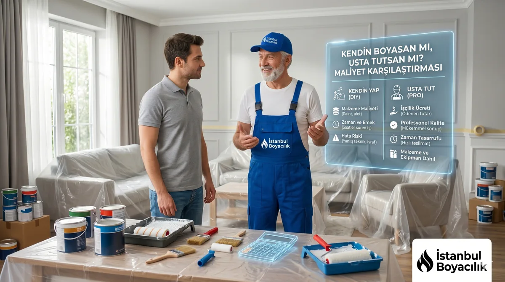

Ev boyatmadan önce pek çok kişinin aklına gelir: “Bunu kendiniz yapıp tasarruf etseniz mi?” Bu sorunun doğru cevabı evinizin büyüklüğüne, fiziksel koşullarına ve ne kadar zamanınız olduğuna bağlıdır. Aşağıda her iki seçeneğin gerçek maliyetlerini karşılaştırıyoruz.
Maliyet Karşılaştırması: 75 m² Örnek Ev
| Kalem | Kendiniz | Usta ile |
|---|---|---|
| Boya malzemesi | 1.800-2.400 TL | Dahil |
| Araç-gereç (rulo, bant, örtü, merdiven) | 800-1.200 TL | Dahil |
| Macun ve astar | 400-700 TL | Dahil |
| İşçilik | — | Teklife dahil |
| Toplam | 3.000-4.300 TL | Keşif sonrası yazılı teklif |
| Harcanan süre | 3-5 gün | 1 gün |
Usta ile boyatmanın güncel maliyeti için 2026 ev boyama fiyatları rehberimize bakabilirsiniz: yaklaşık 75 m²'lik bir 2+1 dairenin boyanması İstanbul genelinde malzeme dahil 25.000–42.000 TL arasındadır.
Kendiniz Boyamanın Avantajları
- İşçilik maliyetini ortadan kaldırır
- Programınıza göre esnek çalışma imkânı
- Küçük alan veya tek oda için makul seçenek
- Ek rötuş işlerini kendiniz yapabilirsiniz
Kendiniz Boyamanın Dezavantajları
- Yüksek tavan, merdiven gerektiren bölümler fiziksel risk taşır
- Düzgün kenar ve köşe yapmak deneyim gerektirir
- 3-5 günlük iş yükü ciddi yorgunluk yaratır
- Hatalı uygulama ikinci kat veya tamamen yeniden boyama gerektirebilir
Hangi Durumda Kendiniz Yapın, Hangi Durumda Usta Tutun?
| Durum | Tavsiye | Gerekçe |
|---|---|---|
| 1-2 odalı küçük daire | Kendiniz | Makul zaman ve maliyet |
| 3+ odalı ev veya villa | Usta tutun | Süre ve yorgunluk denklemi bozulur |
| Yüksek tavanlı mekan (3m+) | Usta tutun | Merdiven güvenliği |
| Sadece rötuş / küçük alan | Kendiniz | Küçük iş usta aramaya değmez |
| Yeni ev veya hızlı taşınma | Usta tutun | 1 günde bitmesi kritik |
| Dış cephe | Kesinlikle usta | Platform ve teknik uygulama gerekli |
Sık Sorulan Sorular
Malzeme ve alet maliyeti açısından kendiniz boyamak daha ucuzdur; ancak harcayacağınız zaman, fiziksel efor ve hatalı uygulamada yeniden boyama ihtimali de hesaba katılmalıdır. Küçük alanlar için kendiniz yapabilirsiniz; büyük evlerde usta tutmak daha verimlidir.
100 m² bir ev için deneyimsiz biri 3-5 gün harcayabilir. Profesyonel boyacı ekibi aynı işi uygun projelerde 1 günde tamamlayabilir.
Rulo, fırça, tepsi, plastik örtü, bant, merdiven, macun, astar ve boya. Bu malzemelerin toplam maliyeti 1.500-3.000 TL arasında olabilir.
Deneyimli eller köşelerde, kenarlarda ve düzgün kat uygulamasında fark yaratır. Açık bir duvarda sonuç benzer görünse de detay çalışmalarında usta farkı hissedilir.
Kendiniz yapmak yerine uygun projelerde 1 günde temiz teslim tercih edenler için WhatsApp ile fiyat bilgisi alın.
WhatsApp ile Fiyat Alın